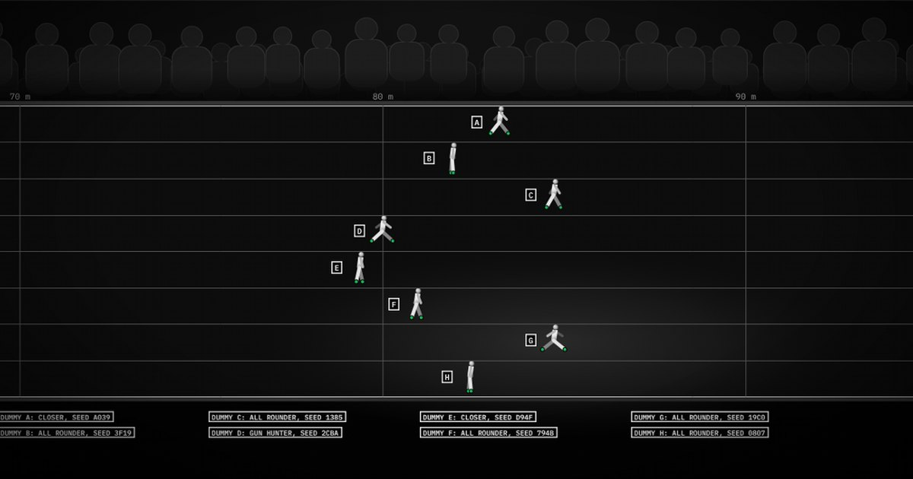

menuarrows or the left stick to pick, enter or cross to choose
no controller seen. press a button, or use the keyboard
file 01 / how it plays
Run on rhythm, not on mash.

CPU vs CPU, eight seeded dummies at 80 metres
Stride on the beat. Alternate the two triggers. The beat starts long out of the blocks and gets quicker as you speed up. Mashing is off rhythm and gets you nowhere.
Full pulls, right lean. Half pulls are half strides. Lean forward hard out of the blocks and come up tall by about 40 m. The hollow box on the gauge is the target.
Wait for the gun. Stride before the gun, or a tenth of a second after it, and it is a false start. Two and you are out. Dip just before the line, never early.
Train well, not a lot. Three drills grade your starts, rhythm and lean. Only your best grade in each builds your athlete, so there is nothing to grind.
Controls
Controller
Keyboard
Stride
L2 and R2, one after the other
F and J, one after the other
Lean
Left stick up to lean forward
W forward, S back
Dip at the line
Cross / A
Space
Pause
Options / Start
P or Esc
Stick drifting? Raise the deadzone in the settings on the games page.